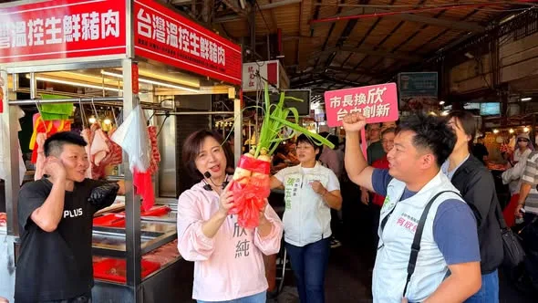
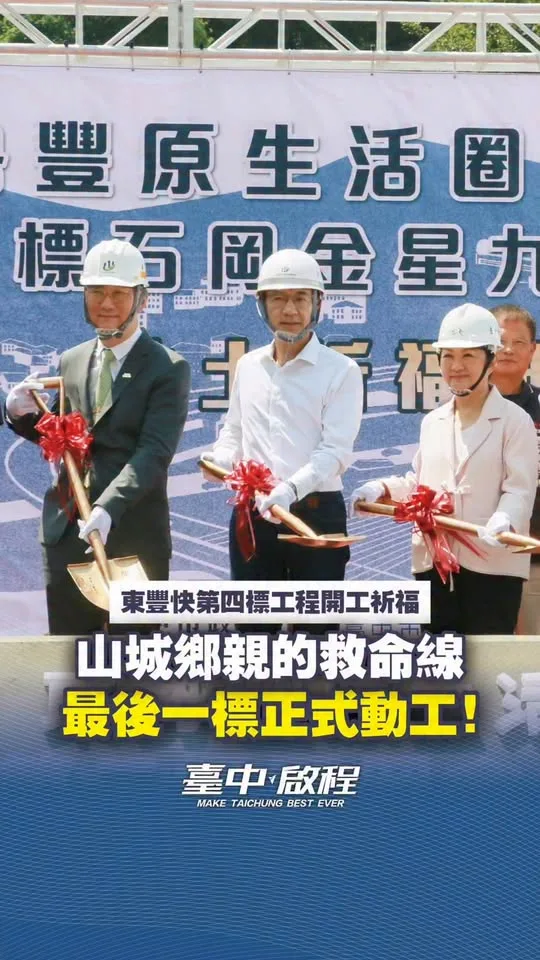
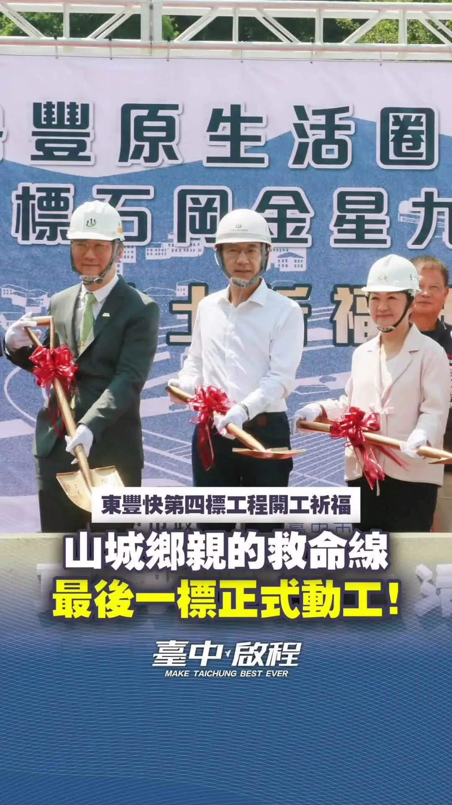
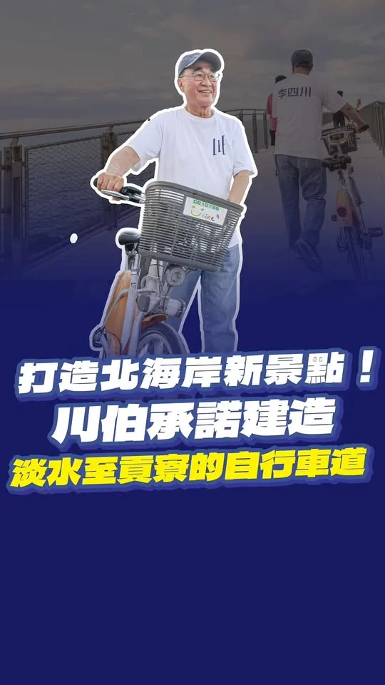
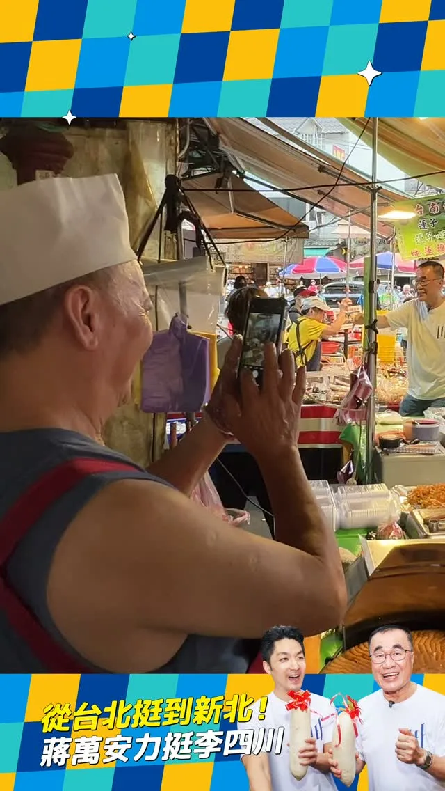
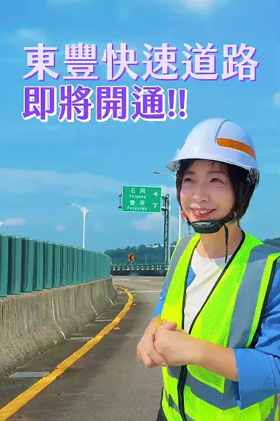
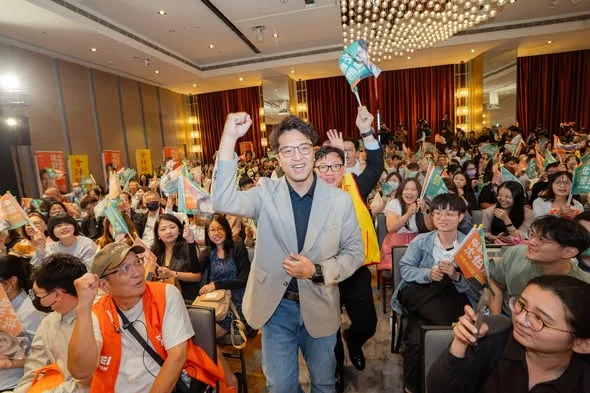

李四川hammer__lee

@hammer__lee:有人來看海，我看海，也看這條路能不能再往前接。 東北角這條海岸步道，可以一路接到淡水。 可以騎車，也可以走路。 我拍的不只是海景，是藍圖。 風景是老天給的，路是人接的。
Posts
@hammer__lee:有人來看海，我看海，也看這條路能不能再往前接。 東北角這條海岸步道，可以一路接到淡水。 可以騎車，也可以走路。 我拍的不只是海景，是藍圖。 風景是老天給的，路是人接的。


一座城市的進步，不只是亮眼的那一面，更要看每一個需要支持的人，能不能被好好接住。 ⠀ 社會福利，是衡量一座城市溫度的尺。 台北擁有全台最豐厚的財政資源，長照涵蓋率卻落後全國平均。 有些長輩，一個人住在沒有電梯的公寓裡，出門變得不容易；有些家庭，把時間都給了生病的家人，自己卻沒辦法好好休息。 ⠀ 這些需要，不該被漏接。 ⠀ 這段時間，我們和許多社福團體、第一線工作者反覆討論，把大家的意見，整理成一套從孩子到長者的社福政策。 ⠀ 因此，我提出「台北社福藍圖」，從五大族群出發，為每一位市民築起安全網。 ⠀⠀ ▻跟長輩一起，在熟悉的地方好好生活 ⠀ 把敬老卡升級為「城市探索護照」，串連健身房、藝文活動，讓長輩每天都有出門的理由。 健身小巴開進社區，在宅醫療與社會處方箋2.0走進家裡。 針對老舊公寓，擴大爬梯機服務、成立到宅修繕服務團，並推動老人租屋友善計畫。 增加住宿型長照機構，發放彈性臨時托老券，讓照顧者有喘口氣的空間。 ⠀ ⠀▻辛苦的中年朋友，也要好好被接住！ ⠀ 補助50歲以上市民一劑皮蛇疫苗；15–45歲免費心理諮商，市府再加碼3次，並擴大到65歲，每人6次。⠀ 推動職場友善政策2.0，以職代津貼補足人力，安心請假！⠀ 針對45歲以上的市民，提供職涯健檢、職務再設計與創業利息補貼。 ⠀⠀ ▻ 孩子成長的每一步，我們一起守護 ⠀ 0至6歲免費腸病毒疫苗；首推0至18歲親子同行卡每月600點。⠀ 成立兒少安全治理分析中心，事後通報變成事前預防，推動通學路安全計畫，守護孩子每天上下學。 ⠀ ▻給身障朋友最貼心的照顧，自在生活 ⠀ 成立無障礙城市設計中心，從家門口、人行道到公共運輸、建築，讓設施使用不再零碎！⠀ 補助罕病家庭家用不斷電系統，並提升身障女性參與公共決策的比率。 ⠀ ▻讓女性一起，守護自己的安全 ⠀ 引入「女性安全審計」，邀請不同年齡、身體狀況的女性，共同檢視公共空間安全。⠀ 建置女性身心健康一站式支持專線，陪伴大家走過心理健康、月經、孕產、更年期困難。⠀ 一座有溫度的城市，是每個人都能在熟悉的家園裡，活得安全、保障，充滿希望。 ⠀ 期待和大家一起，把台北變成這樣的城市。 #台北順起來 #你的市長沈伯洋


🌊 海線媳婦何欣純，推出 #4321海線大進擊！ 我是清水媳婦，也是海線媳婦。每次走訪海線，都能感受到鄉親對交通、建設與地方發展的期待。 今天，我和海線夥伴共同提出「4321海線大進擊」： 🚆 4條軌道加速 藍線拚通車、橘線動工延伸清水、海線鐵路雙軌高架化、舊貨運鐵道轉型觀光鐵道。 🛣️ 3條交通命脈打通 甲埔大道延伸、國道4號延伸台中港、生活圈4號道路闢建。 ✈️🚢 2大海空港升級 升級台中機場、活化台中港與梧棲漁港，帶動海線觀光與產業。 🏆 打造第1的海線 推動台中港盈餘回饋地方，讓海線產業、交通、文化、觀光一起升級！ 4321，海線大進步、大進擊！💪🌊


桃園持續成長，但在城市發展的同時，我們也希望讓年輕人看見未來、留在桃園 四年前，桃園人口是228萬；到了今年，已接近236萬。 面對持續成長的城市，我們一方面推動捷運建設與整體開發，充實城市生活機能；另一方面，也要思考如何讓城市發展的成果惠及更多市民，讓桃園的年輕人能夠留下來。 #桃園首件捷運土地開發案正式簽約 TOD就是以捷運為核心，帶動周邊交通、商業、住宅與生活機能一起發展。這次，桃園首件捷運土地開發案正式簽約，就從蘆竹的機捷A10山鼻站開始。 由宏匯集團、群光電能科技及甲山林建設共同組成的「宏匯光合聯盟」投入，將進一步帶動場站周邊生活機能與區域發展，打造結合商場與住宅的複合大樓，並強化周邊轉乘、停車機能。未來的山鼻站，將會變得很不一樣。 #八德大湳整開區納入可負擔住宅規劃 上週，桃園市都委會審議通過八德大湳森林公園周邊整體開發計畫，除了完善綠地、公共設施與道路，也正式將可負擔住宅納入規劃。加上這項計畫，目前市府已掌握超過300戶可負擔住宅量能。 從提出可負擔住宅構想，到一項項整體開發納入可負擔住宅，我們持續用行動告訴大家，#桃園落實居住正義的決心不會改變。 目前，《桃園市可負擔住宅自治條例》已送行政院審查，市府也持續與中央溝通。我們已經把所有配套準備好，只要法規程序完備，就能讓更多年輕人在桃園安心成家。 有方便的交通、有好的工作，也有一個負擔得起的房子。我們會努力讓桃園變得更好，讓年輕人在這座城市安心成家。

今天來到非常熟悉的太平區 #中山市場，攤販與採買的鄉親都是認識多年的老朋友，還有攤商送上象徵「好彩頭」的菜頭，祝福我勝選，真的讓我又驚喜又窩心❤️ 掃街途中，不少長輩關心老人福利，我也向大家保證，未來擔任市長，老人健保補助一定延續，敬老愛心卡也會再升級，除了每月點數不歸零、擴大使用範圍，計程車單趟使用點數也將提高至200點，讓長輩的福利真正看得到、用得到。 身為屯區女兒，這些年我持續為太平爭取中央資源，從74號快速道路六順橋南入匝道、市民大道一、二期，到太平區聯合行政中心等重大建設陸續完工啟用，就是希望跟著太平的人口成長，把交通、建設與生活品質一起升級。 未來我會繼續和大家一起拚，讓太平越來越好，也讓大台中成為大家安心生活的首選城市！ #心存大台中 #市長換欣_台中創新

鄉親，久等了！#東豐快 最後一標正式動工！💪 今天與盧秀燕市長共同見證山城回家的路，再向前一步！從與 #蘇慶雲議員在中央、地方攜手奔走，到協助爭取約110億元中央補助，每一次協調、每一份堅持，都是為了回應鄉親長年的期待。 感謝秀燕市長堅持復工、市府與工程團隊克服困難，更謝謝鄉親一路支持！我們也持續推動東豐快直接銜接國道四號，讓山城交通更便利，避免車流集中豐原造成壅塞。 石岡至東勢段預計今年底先通車，全線以2029年通車為目標。啟臣會繼續緊盯進度與品質，讓這條 #生命救援線，成為帶動山城發展的 #希望之線！ 今天一起見證動工，未來一起慶祝通車！❤️ #東豐快速道路#安全回家的路 #山城交通 #國道四號#東勢 #石岡 #豐原 #新社 #和平#臺中升級 #幸福旗艦城 #臺中啟程 #打造旗艦城

東豐快速道路，便利台中山城東勢往豐原之間的聯繫，大大縮短市民往來時間，東勢到石岡段即將通車，台中好山好水，觀光、農產、好風景更值得大大行銷，讓台中各區域更好更發展！！ 新台中，交給何欣純！！

20260908 行政院提追加六千億預算..中聯毒油案...泰山向4公司提告求償10億！回覆網友陳情進度：道路安全、交通議題 @longmedia ｜龍介的直播

Uproar in the Heavy Motorcycle Community! Zhang Xue Bikes Seized… Has Taiwan Become a "Ban-First"...

0908受訪 #受訪 #首都2.0 #運動驛站 #四獸山 #數位科技 #登山觀光中心 #串連城市 #管理文化 #有事敢講 有錯敢認 #市政辯論

有人來看海，我看海，也看這條路能不能再往前接。 東北角這條海岸步道，可以一路接到淡水。 可以騎車，也可以走路。 我拍的不只是海景，是藍圖。 風景是老天給的，路是人接的。

一座停車場，也能看見 #臺中的味道！👍 今天出席 #中賓立體停車場 啟用典禮，感謝蔡長海董事長帶領中國醫團隊，與市府攜手提供401席汽車、375席機車停車位。捷安特家族更將對醫療團隊的感謝化為公益，捐贈22柱 #YouBike 租賃柱，讓大家停好車、騎單車，悠遊臺中！ 我常說，盧秀燕市長「大處著眼、小處著手」。配合崇德殯儀館改建，先做好停車配套，就是把市民需求放在心上。從安心出生、健康生活，到有尊嚴地走完人生最後一哩路，城市都要用心照顧。啟臣會延續這份用心，讓臺中成長、生活品質一起提升！ #臺中啟程 #打造旗艦城 #臺中升級 #臺中市北區 #公私協力 #中國醫藥大學附設醫院 #微笑單車 #智慧停車 #友善交通

你們越挺我，我就越拚命！ 我們一起串起山城，連結臺中💪 在東勢看到上千位山城鄉親齊聚，心裡真的只有滿滿的感恩。從政一路走來，山城每一個建設、每一次突破，都是因為有大家當我的最強後盾。 這幾年，我們一起催生 #國道四號豐潭段 、拚 #東豐快復工，目的就是要打通交通命脈。未來我們還要結合 #客家與原民文化、溫泉觀光及在地農特產，讓遊客造訪山城、促進地方繁榮，拚建設一條心、做到底！ 感謝古秀英議員服務團隊議員、吳振嘉 振興山城 有嘉在長期攜手深耕，以及在地農會與各界前輩的全力相挺。山城的大團結，就是臺中迎向黃金十年的最大動力。 懇託各位山城鄉親，年底選戰我們全力衝刺，讓市長高票當選、議員全壘打、基層服務不間斷，我們一起為家鄉拚出更好的未來！ #臺中啟程 #打造旗艦城 #山城 #農家子弟


桃園持續成長，但在城市發展的同時，我們也希望讓年輕人看見未來、留在桃園 四年前，桃園人口是228萬；到了今年，已接近236萬。 面對持續成長的城市，我們一方面推動捷運建設與整體開發，充實城市生活機能；另一方面，也要思考如何讓城市發展的成果惠及更多市民，讓桃園的年輕人能夠留下來。 #桃園首件捷運土地開發案正式簽約 TOD就是以捷運為核心，帶動周邊交通、商業、住宅與生活機能一起發展。這次，桃園首件捷運土地開發案正式簽約，就從蘆竹的機捷A10山鼻站開始。 由宏匯集團、群光電能科技及甲山林建設共同組成的「宏匯光合聯盟」投入，將進一步帶動場站周邊生活機能與區域發展，打造結合商場與住宅的複合大樓，並強化周邊轉乘、停車機能。未來的山鼻站，將會變得很不一樣。 #八德大湳整開區納入可負擔住宅規劃 上週，桃園市都委會審議通過八德大湳森林公園周邊整體開發計畫，除了完善綠地、公共設施與道路，也正式將可負擔住宅納入規劃。加上這項計畫，目前市府已掌握超過300戶可負擔住宅量能。 從提出可負擔住宅構想，到一項項整體開發納入可負擔住宅，我們持續用行動告訴大家，#桃園落實居住正義的決心不會改變。 目前，《桃園市可負擔住宅自治條例》已送行政院審查，市府也持續與中央溝通。我們已經把所有配套準備好，只要法規程序完備，就能讓更多年輕人在桃園安心成家。 有方便的交通、有好的工作，也有一個負擔得起的房子。我們會努力讓桃園變得更好，讓年輕人在這座城市安心成家。 A10車站專用區土地開發案模擬圖 A10車站專用區土地開發案模擬圖
賣了幾十年菜的老闆，把手上的生意先放一邊，拿起手機對著我們拍。 說實在，那一刻我有點不好意思。人家在做生意，我們來打擾。 週六一早，蔣萬安市長從台北過來，陪我走板橋福德市場。一攤一攤過去，握手、合照，老闆娘手機舉起來等，我就湊過去給她拍一張。 有位鄉親端出兩根綁著紅緞帶的白蘿蔔，說：好彩頭，送給你們，凍蒜。 市場裡沒有樣本數，也沒有信心水準。每一隻伸過來的手，都是真的。 台北挺新北，不會只有到了選舉才開始。三年多來難的事我們一起扛過，接下來雙北要接的線、要通的橋，也一樣。 他們把生意先放一邊，我們就得把明天的日子顧好一點。

鄉親，久等了！#東豐快 最後一標正式動工！💪 今天與盧秀燕市長共同見證山城回家的路，再向前一步！從與 #蘇慶雲議員在中央、地方攜手奔走，到協助爭取約110億元中央補助，每一次協調、每一份堅持，都是為了回應鄉親長年的期待。 感謝秀燕市長堅持復工、市府與工程團隊克服困難，更謝謝鄉親一路支持！我們也持續推動東豐快直接銜接國道四號，讓山城交通更便利，避免車流集中豐原造成壅塞。 石岡至東勢段預計今年底先通車，全線以2029年通車為目標。啟臣會繼續緊盯進度與品質，讓這條 #生命救援線，成為帶動山城發展的 #希望之線！ 今天一起見證動工，未來一起慶祝通車！❤️ #東豐快速道路#安全回家的路 #山城交通 #國道四號#東勢 #石岡 #豐原 #新社 #和平#臺中升級 #幸福旗艦城 #臺中啟程 #打造旗艦城

在文燦市長時代，新屋曾經是被重視的焦點。換張善政後，新屋又被邊緣化，成為被遺忘的邊陲。 市長如果有心，能為地方帶來的改變無可限量。 但這幾年，新屋人看到的只有停滯跟空轉。 像是動也不動的新屋都市計畫。在世杰擔任立委期間，和桃園市議員 陳睿生並肩作戰，積極督促內政部，市府只要積極補件就能順利推進。 遺憾的是，張市府消極以對。攸關市民生活品質的公園綠地、住宅區開闢，以及街上繁榮的機會，就這樣被擱置一旁。 新屋要蛻變，產業必須升級，小孩才不必背井離鄉。如果三年前台積電順利進駐，搭配新梅龍快速道路的串聯，新屋早就是高科技廊帶的關鍵腹地。 張善政讓桃園錯失寶貴的黃金三年，卻回頭跟鄉親說，「不要覺得都沒動」？ 新屋人的生活品質與下一代的未來，禁不起散政繼續空轉。 翻轉新屋，需要真正有魄力、有願景、傾聽基層的行動派。 黃世杰已經準備好，把專業與歷練，毫無保留奉獻給最摯愛的家鄉！我知道大家的期待，不只是疼惜新屋子弟，而是期盼一個懂桃園、把新屋放在心上的市長。 11/28，讓我們一起站出來支持黃世杰、翻轉大桃園。終結怠惰散政，讓心桃園全面動起來！


#大寮廟口開講 #中庄朝中宮 鄉親的事，就是我最重視的事。高雄連日大雨過後，鄉親要的其實很簡單：路要平、水要通，回家的路不要再淹水。


重機圈的不滿！張雪機車被扣…臺灣淪為先禁國家

有人來看海，我看海，也看這條路能不能再往前接。 東北角這條海岸步道，可以一路接到淡水。 可以騎車，也可以走路。 我拍的不只是海景，是藍圖。 風景是老天給的，路是人接的。
@pumashen:一座城市的進步，不只是亮眼的那一面，更要看每一個需要支持的人，能不能被好好接住。 ⠀ 社會福利，是衡量一座城市溫度的尺。 台北擁有全台最豐厚的財政資源，長照涵蓋率卻落後全國平均。 有些長輩，一個人住在沒有電梯的公寓裡，出門變得不容易；有些家庭，把時間都給了生病的家人，自己卻沒辦法好好休息。 ⠀ 這些需要，不該被漏接。 ⠀ 這段時間，我們和許多社福團體、第一線工作者反覆討論，把大家的意見，整理成一套從孩子到長者的社福政策。 ⠀ 因此，我提出「台北社福藍圖」，從五大族群出發，為每一位市民築起安全網。 ⠀⠀ ▻跟長輩一起，在熟悉的地方好好生活 ⠀ 把敬老卡升級為「城市探索護照」，串連健身房、藝文活動，讓長輩每天都有出門的理由。 健身小巴開進社區，在宅醫療與社會處方箋2.0走進家裡。 針對老舊公寓，擴大爬梯機服務、成立到宅修繕服務團，並推動老人租屋友善計畫。 增加住宿型長照機構，發放彈性臨時托老券，讓照顧者有喘口氣的空間。

@a_chun1973:🌊 海線媳婦何欣純，推出 「4321海線大進擊」！ 我是清水媳婦，也是海線媳婦。每次走訪海線，都能感受到鄉親對交通、建設與地方發展的期待。 今天，我和海線夥伴共同提出海線進擊政策： 🚆 4條軌道加速 藍線拚通車、橘線動工延伸清水、海線鐵路雙軌高架化、舊貨運鐵道轉型觀光鐵道。 🛣️ 3條交通命脈打通 甲埔大道延伸、國道4號延伸台中港、生活圈4號道路闢建。 ✈️🚢 2大海空港升級 升級台中機場、活化台中港與梧棲漁港，帶動海線觀光與產業。 🏆 打造第1的海線 推動台中港盈餘回饋地方，讓海線產業、交通、文化、觀光一起升級！ 4321，海線大進步、大進擊！💪🌊

昨天「市長，你給我聽好了」上線後 一天就湧入了 10,815則市民心聲 ⠀ 大安區是最多的 有1,637則意見 信義區1,224則 中山區1,093則 ⠀ 市民最生氣的議題 是環境衛生與交通 從人行空間、塞車 到病媒環境衛生 都是市民覺得 最在意與無力的地方 ⠀ 也有許多人提到 希望可以把樹種回來 ⠀ 我們當然不是只有整理而已 我們會釋出更細節的統計資料 並且分區為台北提出解方 ⠀ 也請大家期待 接下來的「市長，你給我聽好了」 實體活動！

場館蓋得起來，比賽才裝得下。習慣養得起來，城市才跑得動。 國民體育日，新北，大家一起動起來。 蓋一座場館不難，難的是讓它天天有人用。 今天 9 月 9 日，是國民體育日，跟大家講幾件我想做的事。 第一，新北運動幣。 每人 500 元，一年 15 萬份。拿去買票看球、報名運動課、租借場地。 運動不是看看就好，要真的走進去，習慣才養得成。 第二，新北巨蛋城。 我們不缺人才，缺的是一座讓世界看見的舞台。 巨蛋城我要加速蓋起來，交通、住宿都接得上。 再去爭取 12 強、經典賽，讓冠軍戰在新北開打。 第三，水陸共融運動園區。 我要把「八里東海運動休閒中心」與「八里水上運動中心」接在一起，做成一個水陸共融的運動園區。 立槳、獨木舟、帆船都放進去。身障朋友、親子、老人家，都能一起下水。 新北有全台最多的 20 座國民運動中心，這些底子，是侯友宜市長打下來的基礎。 我接下來要做的，是讓每一座都天天有人走進去。

@hammer__lee:賣了幾十年菜的老闆，把手上的生意先放一邊，拿起手機對著我們拍。 說實在，那一刻我有點不好意思。人家在做生意，我們來打擾。 週六一早，蔣萬安市長從台北過來，陪我走板橋福德市場。一攤一攤過去，握手、合照，老闆娘手機舉起來等，我就湊過去給她拍一張。 有位鄉親端出兩根綁著紅緞帶的白蘿蔔，說：好彩頭，送給你們，凍蒜。 市場裡沒有樣本數，也沒有信心水準。每一隻伸過來的手，都是真的。 台北挺新北，不會只有到了選舉才開始。三年多來難的事我們一起扛過，接下來雙北要接的線、要通的橋，也一樣。 他們把生意先放一邊，我們就得把明天的日子顧好一點。

東豐快速道路即將開通-新台中，交給何欣純！！

台北的山，不只有風景，也有城市的記憶。 ⠀ 打造亞洲第一觀光登山城，要串聯山徑、交通與文化路徑，讓大家走進山林，也重新認識台北。

會計師，是企業營運的把關者；每一次簽證、每一項專業判斷，背後代表的都是責任與信任。 ⠀ 會計師後援會成立了，感謝國策顧問黃奕睿擔任後援會總會長、台北市會計師公會邵志明理事長擔任後援會會長，也謝謝立法院的好同事 吳秉叡委員、莊瑞雄委員，以及所有到場的台北隊議員夥伴與會計師朋友，給我最堅定的支持。 ⠀ 市政治理應該學習會計師的精神：嚴謹、客觀、誠信。每一分公帑都要花在刀口上，每一項政策都要經得起效益檢驗。 ⠀ 雖然AI提升效率，但AI無法取代人的專業判斷，市長更不可能什麼都懂。真正重要的是，懂得在關鍵時刻讓專業上場，聽工程師談安全、聽交通專家談道路，也聽會計師把數字說清楚。 ⠀ 專業被尊重，市政才能順利推動，市民才能信任政府。 ⠀ 我們一起讓台北成為產業能發展、人才願意留下、專業受到尊重，也讓所有市民感到光榮的城市。 ⠀ #台北順起來 #你的市長沈伯洋

我們有多久沒有走進山裡，重新認識這座城市了？ ⠀ 被群山環抱的台北，搭捷運二十分鐘，就能從繁忙的街道走進一片山林。 ⠀ 這是許多國際城市羨慕的條件，我們卻還沒有好好發揮。 ⠀ 長久以來，台北的文化與山林，像是兩條平行線：在市區體驗文化，在郊區親近自然。 ⠀ 因此，我提出「首都文化徑 × 山林徑」政策，從四大方向，重新串起台北的文化與山林。 ⠀ ⠀ ▻走過台北的昨日與今天：四大主題文化徑 ⠀ 把散落在城市各處的文化景點，串成一張完整的路網。 ⠀ 從茶葉、煤礦留下的產業記憶，到艋舺、大稻埕、北投的城市發展；從客家、原住民、眷村與新移民的多元故事，到人權與民主的歷史現場。 ⠀ 讓文化不再只是單一景點，而是一段可以親自走過的城市故事。 ⠀ ⠀ ▻打造亞洲第一觀光登山城：三座登山觀光中心 ⠀ 在象山、劍潭、貓空設立登山觀光中心，提供裝備租借、中英日韓四語導覽、即時步道資訊與生態體驗預約。 ⠀ 讓登山口成為深度認識台北的「文化入口」，也吸引更多國際旅客走進台北的山林。 ⠀ ⠀ ▻讓山林更順、更安全：重新檢視步道系統 ⠀ 以修復代替新建，補足指標、休息、飲水與安全設施，並建立整合式的數位導覽與安全應急平台。 ⠀ 同時串連不同登山口之間的接駁交通，讓喜愛山林的朋友，走得更順、更安心！ ⠀ ⠀ ▻讓文化與山林成為日常：品牌化、數位治理與親子同行 ⠀ 透過路徑品牌化、數位治理、在地參與與跨局處合作，搭配每月600點的「親子同行卡」，讓沿線的商圈一起受益。 ⠀ ⠀ 台北之所以有這麼多故事可以說，是因為長年以來，有人記錄、有人保存，也有人用行動守護著這片山林與土地。 ⠀ 讓山林成為城市的日常，讓歷史留在我們走過的每一段路上。 ⠀ 期待未來，我們可以一起走進這座城市，也重新認識台北。 #台北順起來 #你的市長沈伯洋

0907受訪 #受訪 #兒童保護 #一個台北二個世界 #交通議題 #衛生議題 #AI城市 #城市願景 #利益迴避 #赴中風險注意